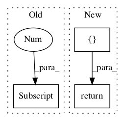

Pattern ID :124
Before Change
raise NotImplementedError
def tag(self, tokens):
return self.tag_sents([tokens])[0]
def tag_sents(self, sentences):
encoding = self._encoding
default_options = " ".join(_java_options)After Change
temp = self.tag_sents([tokens])
// Handle the case where return more than one sentence.
// Note that if it is the case, user should use tag_sents instead
result = []
for sent in temp:
result += sent
return result
def tag_sents(self, sentences):
encoding = self._encodingIn pattern: SUPERPATTERN
Frequency: 4
Non-data size: 3
Instances Fragment ID: 139478
Project Name: nltk/nltk
Commit Name: c6b5fa6dcc360c6542328071c92ac666a70e195b
Time: 2015-01-16
Author: HeroAthen@192-168-1-9.tpgi.com.au
File Name: nltk/tag/stanford.py
Class Name: StanfordTagger
Method Name: tag
Fragment ID: 139482
Project Name: nltk/nltk
Commit Name: 51ab82b3e48e5168b2f523f34e15043516084d9b
Time: 2014-04-20
Author: stevenbird1@gmail.com
File Name: nltk/parse/api.py
Class Name: ParserI
Method Name: parse
Fragment ID: 139480
Project Name: nltk/nltk
Commit Name: 402aaa02060c1ece1f678fa179b38f4f1bff3bf6
Time: 2011-02-01
Author: peter.ljunglof@heatherleaf.se
File Name: nltk/tag/hunpos.py
Class Name: HunposTagger
Method Name: tag
Fragment ID: 139481
Project Name: nltk/nltk
Commit Name: d8402e3f43ce3b7a3c7ecb45c3b8b1f75c7124e2
Time: 2016-09-10
Author: markamery@btinternet.com
File Name: nltk/stem/porter.py
Class Name: PorterStemmer
Method Name: _step1c